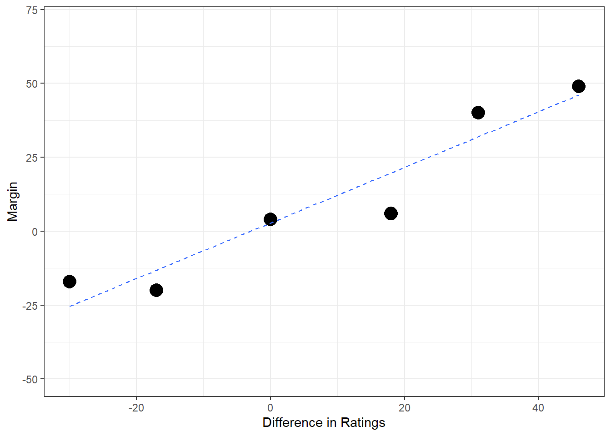
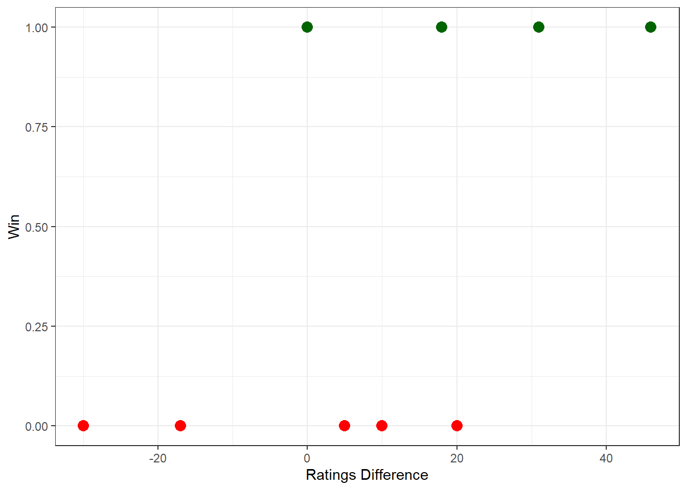
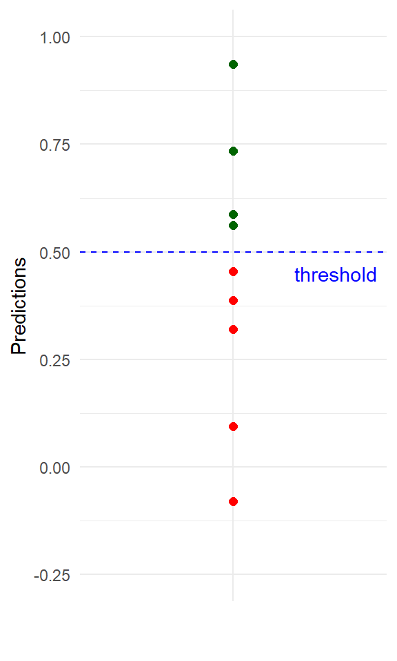
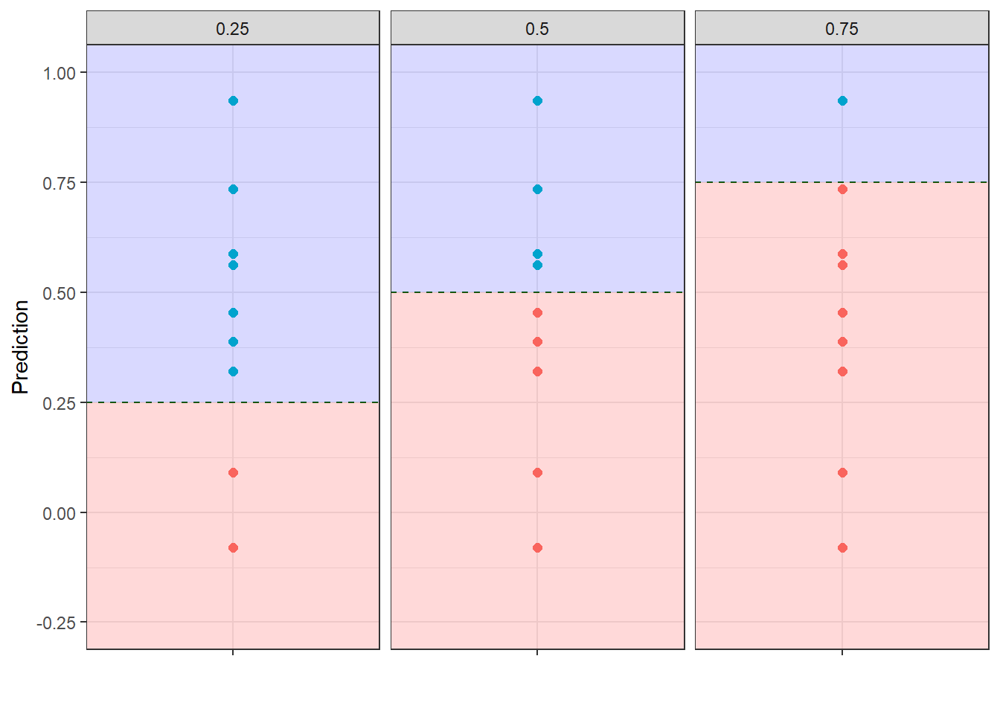

Margin | Ratings Difference |
|---|---|
-20 | -17 |
-17 | -30 |
4 | 0 |
6 | 18 |
40 | 31 |
49 | 46 |
8 Classification and Prediction
8.1 Introduction
Over the past few chapters, we have focused on linear models, where the outcome of interest is numeric. Using tools such as simple and multiple linear regression, we learned how to quantify relationships between variables, interpret model coefficients, and use data to make predictions about continuous outcomes — such as income ($), age (years), reaction time (secs), or performance scores (points).
However, not all real-world questions involve predicting numbers. In many situations, our goal is to predict a category, group, or decision rather than a numerical value. For example:
- Will a customer default or not default on a loan? (yes or no)
- Will a student pass or fail a unit? (pass or fail)
- Is an athlete selected or not selected for a team? (selected or not selected)
These problems fall under the umbrella of classification, where the outcome variable is categorical rather than numeric. In this chapter, we extend the ideas of modelling and prediction to these types of problems. While the goal changes—from predicting a number to predicting a class—the underlying principles remain familiar. We still:
- use predictors (explanatory variables),
- build models based on observed data,
- evaluate how well those models perform, and
- use them to make predictions for new observations.
In this chapter, we take a first step into classification by using a familiar tool in an unfamiliar way: linear regression. Specifically, we introduce the linear probability model (LPM), where a binary outcome is modelled using a linear regression framework. The LPM allows us to interpret coefficients as changes in probability, making it an intuitive and accessible entry point into classification modelling—especially given our existing understanding of linear models.
However, while the linear probability model is simple and easy to interpret, it comes with important limitations, such as:
- the possibility of predicted probabilities falling outside the 0–1 range,
- violations of key regression assumptions, and
- challenges in interpreting uncertainty and model fit.
Understanding why the linear probability model breaks down is just as important as knowing how to fit it. These limitations motivate the need for more appropriate models for binary outcomes. In the next chapter, we will build on this foundation by introducing logistic regression, a model specifically designed for classification problems. Logistic regression resolves many of the issues encountered with the linear probability model while retaining a clear interpretation in terms of probabilities, making it a central tool in statistics, econometrics, and data science.
8.2 A quick recap: Linear regression
Before moving into classification models, we briefly revisit linear regression as this will be crucial for understanding classification.
Suppose we are interested in predicting goal difference (also called Margin) in a football match. A positive margin means the home team wins by that many goals, while a negative margin indicates a loss. As a simple starting point, we assume that the only predictor of match outcome is the difference in team ratings (Ratings Difference) prior to the game.
We observe the following data:
In this particular case, we can express the relationship between these two variables as:
\[Margin=\beta_0+\beta_1(\text{Ratings Difference})\]
Theoretically this model makes sense, as larger rating differences should have greater margins (imagine an elite adult level team vs a group of 5-year-old children - the difference in ratings would be huge, and therefore we would predict a much larger margin).
If we were to plot this data it might look like the image below (where the dashed blue line represents the trend line).

Suppose we use software (such as Excel) to determine the model to be:
\[\text{Margin}=2.81+0.94(\text{Ratings Difference})\]
8.3 Explain versus Predict
In Statistics, it’s important to be clear about what we are trying to achieve. Broadly, statistical models are used for two related but distinct purposes: explanation and prediction.
8.3.1 Explaination
Explanation is about understanding why things happen. An explanatory model focuses on the relationship between variables, aiming to isolate and interpret the effect of one variable on another. For example, we might ask: How much does a one-unit increase in team rating difference change the expected goal margin, on average? From our model above, we can see that the slope for Ratings Difference (\(\beta_1\)) is 0.94. This helps us to explain the relationship between ratings difference and margin, i.e. for every one-unit increase in ratings difference, the expected margin increases by 0.94 points.
8.3.2 Prediction
Prediction, by comparison, is about using a model to generate predictions for future or unseen observations. The primary goal is not to interpret individual coefficients, but to produce accurate forecasts of an outcome based on available information. For instance, we might use team rating differences to predict the goal margin in an upcoming match
For example, suppose two teams that were to play a match next week. The ratings for both teams are as follows:
- \(Rating_\text{Team A}=1530\)
- \(Rating_\text{Team B}=1510\)
In this case, the Ratings Difference is \(1530-1510=20\). Therefore, using our model, we would predict the Margin to be:
\[ \begin{aligned} \text{Margin} &=2.81 + 0.94(\text{Ratings Difference}) \\ &=2.81 + 0.94(20) \\ &=21.61 \end{aligned} \]
8.4 Training and Testing Sets
So far, when fitting a regression model, we have used all available data to estimate the relationship between predictors and the outcome. While this is useful for understanding relationships, it does not tell us how well the model will perform on new, unseen data.
In prediction and classification problems, this distinction is crucial. Our goal is not just to explain the past, but to make accurate predictions about the future.
8.4.1 Training data
The training dataset is the portion of data used to fit the model. This is where the model learns the relationship between variables—for example, how differences in team ratings relate to goal margin.
Using training data, we:
- estimate model parameters (such as the intercept and slope),
- choose model structure, and
- understand how predictors influence the outcome.
However, a model that fits the training data very well may still perform poorly on new data. This phenomenon is known as overfitting, where the model captures noise or idiosyncrasies specific to the training sample rather than the underlying pattern. For example, let’s use our current data to fit two models: (1) a linear model and (2) a complicated non-linear model that connects all of the data.

8.4.2 Testing data
The testing dataset is held back during model fitting and is used only to evaluate model performance. Because the model has never “seen” this data before, performance on the test set provides a more realistic measure of how well the model is likely to perform in practice. For example, suppose we have 4 games (highlighted in green below) that were held back during training the model. We can visualise their deviations from the models as the solid black lines:

If we sum all of the errors (and look at the lengths of the errors - see image below), we would find that the linear model has a smaller error term which ultimately leads to better predictions.

So even though the complicated model fitted the data better, the linear model was better at making predictions. So if we had to choose between these two models for making predictions, we would go with the linear one. Note: fitting the training data well but making poor predictions is the bias-variance trade-off problem.
8.5 Linear Probability Model (LPM)
In the previous section we looked at an example where the outcome (Margin) was numeric, see table below which includes a few extra data points.
Ratings Difference | Margin |
|---|---|
-17 | -20 |
-30 | -17 |
0 | 4 |
18 | 6 |
31 | 40 |
46 | 49 |
10 | -1 |
5 | -16 |
20 | -9 |
Suppose that instead of modelling Margin, we were interested in a binary outcome such as Win / Loss
Ratings Difference | Margin | Win |
|---|---|---|
-17 | -20 | Loss |
-30 | -17 | Loss |
0 | 4 | Win |
18 | 6 | Win |
31 | 40 | Win |
46 | 49 | Win |
10 | -1 | Loss |
5 | -16 | Loss |
20 | -9 | Loss |
Usually these are denoted with 0s and 1s to make computation a bit easier
Ratings Difference | Margin | Win |
|---|---|---|
-17 | -20 | 0 |
-30 | -17 | 0 |
0 | 4 | 1 |
18 | 6 | 1 |
31 | 40 | 1 |
46 | 49 | 1 |
10 | -1 | 0 |
5 | 16 | 0 |
20 | -9 | 0 |
Now, if we tried to plot Ratings Difference and Win, we would obtain the Figure below. Notice here that because our outcome is binary, we can only have y values of 0 (Loss) or 1 (Win):

And similar to our previous examples, we can fit a linear regression model for this data
\[\text{Win}=0.321+0.013(\text{Ratings Difference})\]
If Win was a numeric outcome, we would interpret the coefficient in the same way as in standard linear regression. For example:
For each additional one-point increase in Ratings Difference, Win increases by 0.013.
However, this interpretation does not make much sense in this context. The reason is that Win is a binary variable — it can only take the values 0 (loss) or 1 (win). There is no meaningful way for Win to increase by 0.013 in an observed match; a team either wins or it does not.
Instead, when using a linear probability model (LPM), we reinterpret the outcome variable. Although Win is coded as 0 or 1, the expected value of Win represents a probability:
\[E(\text{Win})=P(\text{Win}=1)\]
This means the model is not predicting individual wins or losses directly, but rather the probability of winning. Under this interpretation, the coefficient is understood as a change in probability:
For each additional point in Ratings Difference, the chance of winning (Win = 1) increases by 0.013.
This interpretation is intuitive and one of the main reasons the linear probability model is often used as a first step in classification problems. It allows us to:
- interpret coefficients in a familiar linear regression framework, and
- directly link predictors to changes in probability.
CautionCaution
However, this convenience comes at a cost. Because the model is linear, it can predict probabilities less than 0 or greater than 1, which are not meaningful. For example, suppose we had the following scenario:
- \(Rating_\text{Team A}=1500\)
- \(Rating_\text{Team B}=1425\)
In this case, the Ratings Difference is \(1500-1425=75\). Therefore, using our model, we would predict the chance of winning to be:
\[ \begin{aligned} \text{Win} &=0.321 + 0.013(\text{Ratings Difference}) \\ &=0.321 + 0.013(75) \\ &=1.323 \end{aligned} \]
Clearly, this would not be possible (likewise, we could also have negative probability values as well). In the next chapter, we will learn about a statistical test that can deal with this limitation.
8.6 Thresholds
When using models for classification, the output is often a probability, not a direct class label. For example, a linear probability model might estimate that a team has a 0.63 probability of winning a match. On its own, this probability is informative — but in many practical situations, we must go one step further and make a decision: win or loss, approve or reject, intervene or not. To turn predicted probabilities into class labels, we must choose a classification threshold. A threshold specifies the probability value above which we predict one class (typically coded as 1) and below which we predict the other (coded as 0). A common default is 0.5, but this choice is not universal and is often not optimal.
Let’s revisit the example from earlier. Using the derived model we can determine the predicted probability of Win for each observation.

Let’s also plot these predictions (see Figure below). A threshold is then chosen (default = 0.50) to help us classify the predictions. Predictions below the threshold would have a predicted classification of 0. Whereas, predictions above the threshold would have a predicted classification of 1

Using this threshold, we can see which observation would be classified as a 0 and which ones would be classified a 1:
Win | R.Diff | Prediction | Class (Thresold = 0.50) |
|---|---|---|---|
0 | -17 | 0.090 | 0 |
0 | -30 | -0.080 | 0 |
1 | 0 | 0.321 | 0 |
1 | 18 | 0.562 | 1 |
1 | 31 | 0.735 | 1 |
1 | 46 | 0.936 | 1 |
0 | 10 | 0.455 | 0 |
0 | 5 | 0.388 | 0 |
0 | 20 | 0.588 | 1 |
To see how well the model did at making predictions with this threshold, we can compare the actual outcome (Win) to the predicted class. We can see in most cases, the Actual and the Predicted outcomes are the same. But in some other cases, they are not the same (which means that the prediction is incorrect). Specifically, we cab see two predictions at this threshold which are incorrect:
Win | R.Diff | Prediction | Class (Thresold = 0.50) | Correct Prediction? |
|---|---|---|---|---|
0 | -17 | 0.090 | 0 | Yes |
0 | -30 | -0.080 | 0 | Yes |
1 | 0 | 0.321 | 0 | No |
1 | 18 | 0.562 | 1 | Yes |
1 | 31 | 0.735 | 1 | Yes |
1 | 46 | 0.936 | 1 | Yes |
0 | 10 | 0.455 | 0 | Yes |
0 | 5 | 0.388 | 0 | Yes |
0 | 20 | 0.588 | 1 | No |
When evaluating a binary classification model, results are often summarised in a 2×2 table, sometimes called a confusion matrix. This table compares what the model predicted with what actually occurred. Each cell in the table corresponds to a specific type of outcome, and understanding these outcomes is essential for interpreting model performance.
| Predicted | Actual | Total |
|---|---|---|
| Win | Loss | |
| Win | 3 | 1 |
| Loss | 1 | 4 |
| Total | 4 | 5 |
From this table, we can easily see that:
- Of the 4 predicted ‘Win’ outcomes, 3 was correct and 1 was incorrect
- Of the 5 predicted ‘Loss’ outcomes, 1 was incorrect and 4 were correct
8.7 Type 1 and Type 2 Errors
Whenever we use a model to make a classification decision, there is the possibility of making a mistake. In binary classification problems, these mistakes fall into two distinct types, known as Type I and Type II errors. Understanding the difference between them is essential, because not all errors have the same consequences.
A Type I error occurs when the model predicts a positive outcome when the true outcome is negative. In other words, we classify an observation as belonging to class 1 when it actually belongs to class 0. In the example above, this would mean predicting a win when the team in fact loses. This type of mistake is commonly called a false positive.
A Type II error occurs in the opposite situation: when the model predicts a negative outcome even though the true outcome is positive. That is, we classify an observation as class 0 when it truly belongs to class 1. In our football example, this corresponds to predicting a loss when the team actually wins. This type of mistake is commonly called a false negative.
In our current example:
| Actual Win | Actual Loss | |
|---|---|---|
| Pred Win | 3 | 1 |
| Pred Loss | 1 | 4 |
| Actual Win | Actual Loss | |
|---|---|---|
| Pred Win | True Positive | False Positive |
| Pred Loss | False Negative | True Negative |
TipNote
True Positives (TP)
A true positive occurs when the model predicts a positive outcome and the actual outcome is also positive. In other words, the model correctly identifies a case that truly belongs to class 1. For example, in a football context, a true positive would be predicting a win when the team actually wins. True positives represent correct positive classifications.
False Positives (FP)
A false positive occurs when the model predicts a positive outcome, but the actual outcome is negative. Here, the model signals a win when the team in fact loses. False positives are often associated with Type I errors. While the model appears confident, it has incorrectly classified a negative case as positive.
True Negatives (TN)
A true negative occurs when the model predicts a negative outcome and the actual outcome is also negative. This corresponds to correctly predicting a loss when the team does indeed lose. True negatives represent correct negative classifications, and together with true positives, they contribute to overall model accuracy.
False Negatives (FN)
A false negative occurs when the model predicts a negative outcome even though the actual outcome is positive. In this case, the model predicts a loss when the team actually wins. False negatives are associated with Type II errors and reflect situations where the model fails to detect a true positive outcome.
Confusion matrixes can be useful in comparing the classification accuracy of different models. For example, let’s compare the two models below, which generated the following confusion matrixes:
| Actual Win | Actual Loss | |
|---|---|---|
| Pred Win | 242 | 47 |
| Pred Loss | 51 | 210 |
| Actual Win | Actual Loss | |
|---|---|---|
| Pred Win | 51 | 248 |
| Pred Loss | 263 | 62 |
In this example, it is clear that Model 1 (more True Positives and True Negatives) is better than Model 2 (which has more False Positives and False Negatives).
But sometimes it isn’t so obvious. For example, consider the following models and their respective confusion matrixes:
| Actual Win | Actual Loss | |
|---|---|---|
| Pred Win | 242 | 47 |
| Pred Loss | 51 | 210 |
| Actual Win | Actual Loss | |
|---|---|---|
| Pred Win | 239 | 40 |
| Pred Loss | 32 | 141 |
This is where the following formulas can help us in assessing the errors in our predictions.
8.7.1 False Positive Rate (Type I Error)
The false positive rate (also called Type I Error) tells us the proportion of negative cases that were incorrectly predicted as positive (in this example, losses incorrectly predicted as wins), and can be calculated with the following formula:
\[\text{False Positive Rate (Type I Error)}=\frac{\text{False Positive}}{\text{False Positive + True Negative}}\]
If we consider Model1 and Model3 above, the False Positive rate for these two would be:
\[ \begin{aligned} \text{False Positive Rate}_\text{Model 1} &= \frac{47}{47+210} \\ &= \frac{47}{257} \\ &= 0.183 \end{aligned} \]
\[ \begin{aligned} \text{False Positive Rate}_\text{Model 3} &= \frac{40}{40+141} \\ &= \frac{40}{181} \\ &= 0.221 \end{aligned} \]
Here we can see that Model 1 has a lower False Positive Rate (which means it has made fewer errors in predicting wins)
8.7.2 False Negative Rate (Type II Error)
We also have the false negative rate (also called Type II Error), which tells us the proportion of positive cases that were incorrectly predicted as negative (i.e. wins incorrectly predicted as losses). The False Negative Rate is given by:
\[\text{False Negative Rate (Type II Error)}=\frac{\text{False Negative}}{\text{False Negative + True Positive}}\]
For our two models, the False Negative Rate are:
\[ \begin{aligned} \text{False Negative Rate}_\text{Model 1} &= \frac{51}{51+242} \\ &= \frac{51}{293} \\ &= 0.174 \end{aligned} \]
\[ \begin{aligned} \text{False Negative Rate}_\text{Model 3} &= \frac{32}{32+239} \\ &= \frac{32}{271} \\ &= 0.118 \end{aligned} \]
Here we can see that Model 3 has a lower False Negative Rate (which means it has made fewer errors in predicting losses).
8.7.3 Choosing Models based on Type I/II Errors
If we compare the two models above, we can see that:
- The False Positive Rate is better for Model 1 than Model 3.
- By comparison, the False Negative Rate is better for Model 3 than Model 1.
Which model we choose depends on what types of mistakes matter most in the context of the decision being made. In many real-world situations, decisions are binary, and the outcome of a decision can be either correct or incorrect when compared to what actually happens. These incorrect decisions map directly onto the ideas of false positives and false negatives that we have just introduced.
Consider the two situations below. In each case, a decision must be made, and an incorrect decision can occur in one of two ways. However, the consequences of these errors are not the same. As you read through each scenario, think carefully about which type of error would be more acceptable—or less harmful—to make, and why. This exercise highlights an important idea in classification: there is rarely a single “best” model in all situations. Instead, the most appropriate model is the one that balances errors in a way that aligns with the goals and risks of the problem at hand.

Consider a court case situation where a defendant is on trial. The defendant is either Guilty or Not Guilty of the charges laid against them, and the judge has to make a decision (guilty or not guilty) based on the evidence presented:
- A correct guilty verdict would be a TRUE POSITIVE
- A correct not guilty verdict would be a TRUE NEGATIVE
- However, if they judge concludes Guilty, but the defendant was actually Innocent, then this would be a FALSE POSITIVE
- Conversely, if the judge concludes Not guilty, but the defendant actually was Guilty, then this would be a FALSE NEGATIVE.
In this situation, the consequences of incorrect decisions would be:
- False Positive: Innocent person goes to jail
- False Negative: Guilty person walks free
In your opinion, which error is worse to make?

Let us now consider a different example that involves cancer patients. Suppose a patient has been advised to take a test to screen for lung cancer, and the test will tell the patient one of tweo outcomes (cancer or no cancer). Here:
- A correct cancer diagnosis would be a TRUE POSITIVE
- A correct non-cancer diagnosis would be a TRUE NEGATIVE
- If the test says ‘Cancer’, but the patient doesn’t have Cancer, then this would be a FALSE POSITIVE
- If the test says ‘No Cancer’, but the patient does have Cancer, then this would be a FALSE NEGATIVE
In this situation, the consequences of incorrect test diagnosis would be:
- False Positive: Stress, Worrying
- False Negative: Condition becomes worse (because not treated early)
In your opinion, which error is worse to make?
In the two examples above, we can see that different incorrect decisions can have largely different impacts. If correctly identifying positives is more important (e.g. detecting Cancer), then we would choose models that emphasise False Positive Rates. On the other hand if it’s preferable to have a guilty person walk through (as opposed to an innocent person going to jail), then we might choose a model that emphasises False Negative Rates.
8.7.4 Overall Accuracy
Apart from the false positive and false negative rates, we can also calculate overall accuracy, which measures the proportion of all predictions that are correct.
\[\text{Overall Accuracy}=\frac{\text{True Positive + True Negative}}{\text{True Positive + False Positive + True Negative + False Negative}}\]
While accuracy is simple and intuitive, it is often less informative on its own. In practice, it is more common to keep these measures separate because accuracy hides the type of mistakes being made. Two models can have the same overall accuracy but very different balances of false positives and false negatives. In many real-world applications, these errors do not carry the same consequences, and treating them as equally important can lead to poor decision-making.
By examining false positive and false negative rates separately, we gain a clearer understanding of how a model is making errors, not just how often it is wrong. This allows us to choose models and classification thresholds that align with the priorities and risks of the problem, rather than relying on a single summary number.
8.8 Choosing different thresholds
In the examples so far, we have used a default threshold of 0.5 to convert predicted probabilities into class labels. That is, if the predicted probability of a win is greater than or equal to 0.5, we predict Win; otherwise, we predict Loss. While this rule is common, it is not mandatory and is often not the best choice.
The classification threshold controls the trade-off between false positives and false negatives. Lowering the threshold makes it easier for observations to be classified as positive, which typically increases the number of true positives but also increases false positives. Raising the threshold has the opposite effect: fewer positives are predicted, reducing false positives but increasing false negatives.
Which threshold is most appropriate depends on the context of the decision. In situations where false positives are costly—such as incorrectly convicting an innocent person or falsely flagging a legitimate transaction as fraud—a higher threshold may be preferred. In contrast, when missing a true positive is more serious—such as failing to detect a medical condition or overlooking a high-risk case—a lower threshold may be more appropriate.
Importantly, changing the threshold does not change the underlying model or the predicted probabilities. It only changes how those probabilities are translated into decisions. This means that even with the same model, different stakeholders might reasonably choose different thresholds depending on their priorities and tolerance for risk.
As an example, let us consider the data from earlier. In the figure below we have the same data plotted with three different threshold (as the dashed line) values: 0.25, 0.50 and 0.75 respectively.

Now depending on which threshold we decide on, how we classify each observation can vary:
Actual | Classification (0.25) | Classification (0.50) | Classification (0.75) |
|---|---|---|---|
0 | 0 | 0 | 0 |
0 | 0 | 0 | 0 |
1 | 1 | 0 | 0 |
1 | 1 | 1 | 0 |
1 | 1 | 1 | 0 |
1 | 1 | 1 | 1 |
0 | 1 | 0 | 0 |
0 | 1 | 0 | 0 |
0 | 1 | 1 | 0 |
If we compare each classification to the actual value, then we can see which predictions were correct under each of these three thresholds:
Actual | Classification (0.25) | Classification (0.50) | Classification (0.75) |
|---|---|---|---|
0 | Correct | Correct | Correct |
0 | Correct | Correct | Correct |
1 | Correct | Incorrect | Incorrect |
1 | Correct | Correct | Incorrect |
1 | Correct | Correct | Incorrect |
1 | Correct | Correct | Correct |
0 | Incorrect | Correct | Correct |
0 | Incorrect | Correct | Correct |
0 | Incorrect | Incorrect | Correct |
This allows us to create confusion matrixes for each threshold:
| Actual Win | Actual Loss | |
|---|---|---|
| Pred Win | 4 | 3 |
| Pred Loss | 0 | 2 |
| Actual Win | Actual Loss | |
|---|---|---|
| Pred Win | 3 | 1 |
| Pred Loss | 1 | 4 |
| Actual Win | Actual Loss | |
|---|---|---|
| Pred Win | 1 | 0 |
| Pred Loss | 4 | 5 |
Finally, we can compute the False Positive and False Negative rates to make a decision on which threshold we would like to choose
For the False Positive Rates:
\[ \begin{aligned} \text{False Positive Rate}_\text{(0.25)} &= \frac{3}{3+2}=0.60 \\ \end{aligned} \]
\[ \begin{aligned} \text{False Positive Rate}_\text{(0.50)} &= \frac{1}{1+4}=0.20 \\ \end{aligned} \]
\[ \begin{aligned} \text{False Positive Rate}_\text{(0.75)} &= \frac{0}{0+5}=0.00 \\ \end{aligned} \]
And for the False Negatives:
\[ \begin{aligned} \text{False Negative Rate}_\text{(0.25)} &= \frac{0}{0+4}=0.00 \\ \end{aligned} \]
\[ \begin{aligned} \text{False Negative Rate}_\text{(0.50)} &= \frac{1}{1+3}=0.25 \\ \end{aligned} \]
\[ \begin{aligned} \text{False Negative Rate}_\text{(0.75)} &= \frac{4}{4+1}=0.80 \\ \end{aligned} \]
Note here that because we are dealing with small samples, some of the error values are 0 - which is highly unlikely if we were to use a real data set!
So how do we decide which classification threshold to use? Rather than relying on a single default value, one approach is to examine how model performance changes across all possible thresholds. This idea underpins tools such as the Receiver Operating Characteristic (ROC) curve, which plots the trade-off between the true positive rate and the false positive rate as the threshold varies. The Area Under the Curve (AUC) then provides a single summary of how well the model separates the two classes, independent of any specific threshold choice.
While ROC curves and AUC are widely used in practice, particularly in machine learning and diagnostic testing, they go beyond the scope of this unit. Instead, our focus in this unit is on understanding the conceptual trade-off between false positives and false negatives and choosing thresholds based on the context and consequences of decision-making. This perspective equips us to make informed, transparent classification choices, even without advanced optimisation tools.